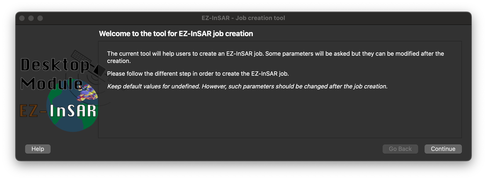
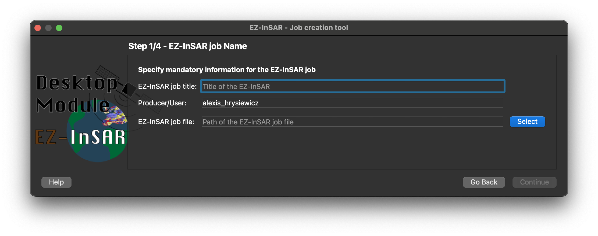
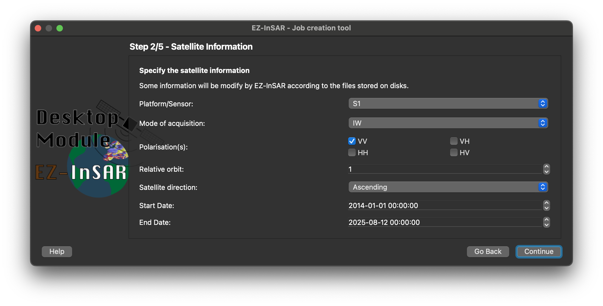
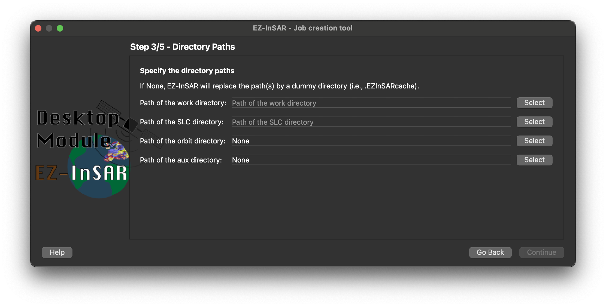
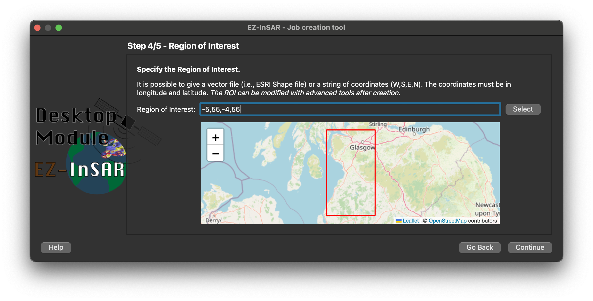
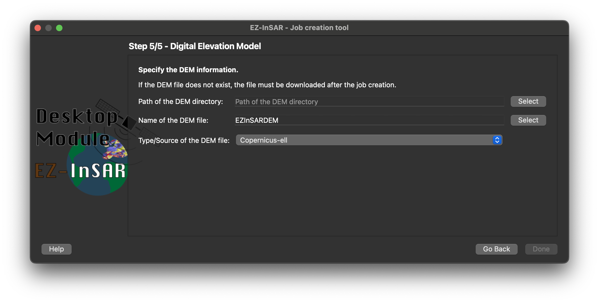

Create a new EZ-InSAR job
EZ-InSAR includes a tool to create an EZ-InSAR. Go to File -> New.
Note
The EZ-InSAR command to directory open the tool without the full application is:
ezinsar desktop create
Note
All information can be modified later.
Introduction
The first wizard page is a simple introduction. Go to Next.
{kind=link}

EZ-InSAR job creation tool (Page 0 of 5). The layout may differ slightly depending on your version.
EZ-InSAR job information
The second page allows to define the main information of the job:
the title;
the producer name;
the path of the EZ-InSAR job file.
{kind=link}

EZ-InSAR job creation tool (Page 1 of 5). The layout may differ slightly depending on your version.
After filling in the information, Go to Next.
Satellite information
The 3rd page allows to define the information regarding the satellite. As the other pages, these information can be modified later. If the images are already stored on disks, EZ-InSAR will modify the information automatically.
{kind=link}

EZ-InSAR job creation tool (Page 2 of 5). The layout may differ slightly depending on your version.
After filling in the information, Go to Next.
Job directories
The 4st page allows to define the directories used by EZ-InSAR.
{kind=link}

EZ-InSAR job creation tool (Page 3 of 5). The layout may differ slightly depending on your version.
After filling in the information, Go to Next.
Region of interest
The 5st page allows the selection of the region of interest. Coordinates <S,W,N,E> or a vector file (i.e., shapefile) can be given.
{kind=link}

EZ-InSAR job creation tool (Page 4 of 5). The layout may differ slightly depending on your version.
After filling in the information, Go to Next.
Digital Elevation Model
The 5st page allows to define some preliminary information about the used DEM.
{kind=link}

EZ-InSAR job creation tool (Page 5 of 5). The layout may differ slightly depending on your version.
After filling in the information, Go to Done. The job file will be generate and stored.